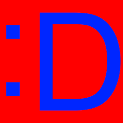

This year's design brief was a long, tough challenge. It started out with our webmaster crew of 4 sitting down, and thinking about what we were going to do for this project. Many of our initial ideas included using Content Management Systems to keep track of our website, and various browsers to test for cross-platform capability. The suggestion to use a CMS would be imperative in getting our site to where it is today.
Immediately, we realized that we would want to be able to do "live prototyping". This means that we didn't want to just develop locally, and be blind to potential problems with loading times due to internet connection speeds, but have a live website that was being updated real-time. We decided that the best way to do this was to use a CMS, such as WordPress.
With WordPress, we were able to set up a site quickly, and thus have access to a rich canvas in order to develop our ideas. We considered many factors in designing our website, including cross-platform compatibility, accessibility, connection speeds, and general attractiveness. Using this tool, we were able to take input from our peers and advisors in Tech Club , and help design a website based off of their needs. We wanted our site to be something simple, with an appropriate amount of content and an aesthetically pleasing design. We also strived to create a site that stood out from the others, in terms of both form and function.
Once we were off the ground and running, we wanted to be able to show our peers and advisors how our website was going. This way, if they wanted a change, or if they had new content to add, we could work together to improve the site. At the same time, we wanted to have a stable version of the site for people to use, rather than have it down for maintenance for long periods of time. This is when we decided to use a subdomain.
With the subdomain, we were able to work effectively as a team, troubleshooting errors and checking the site on various platforms. The subdomain was an instrumental tool in developing this product, since it involved the community it was going to serve. Websites are supposed to be created around the community, rather than being adjusted at the last-minute to suit their needs. We're proud to say that our entire chapter was involved, one way or another, in the development of this website.
With technological advancements arriving at such a fast pace, we found ourselves armed with a vast arsenal of collaboration tools. One of the tools we found vital to our developing process was Google Docs. With Google Docs, we were able to work together (at once) as a team to develop a wireframe for our website. Google Docs was instrumental not only in this phase, but also in the actual code writing. We used Google Docs to track revisions to our code, and keep things organized. For a project this large, organization was imperative, and Google was able to step up to the plate to provide us with the necessary tools.
We're proud to announce that our website is 100% valid HTML5. It took us quite a few revisions and workarounds to achieve this, but we were able to pull through for the sake of our viewers. Valid HTML and CSS are essential to web development, because of how certain devices parse code. We want our website to be accessible through various means, including mobile phones. You can check the validity of our site's HTML using the link on the footer of each page.
Josh Kayani is an 18 year old geek who loves to code! Having started web development freshman year of high school, he's a quick learner and able to adapt to new standards and coding techniques. He aspires to become a software developer in the future, and will attend NC State to major in Computer Science.
Richard "RJ" Duane is a 17 year old senior at Mallard Creek. He started creating content for the web in 3rd grade after accidentally checking out a book on basic HTML from the school library. He has since maintained a passion for Web design and hopes to pursue a career as a webmaster.
Kati Hughes is a 16 year old junior at Mallard Creek High School. This is her first year with TSA but she is involved in three separate competitions. She has been involved with other school clubs like Multicultural Society, and has received an honorable mention in the Scholastic Art and Writing Awards. She is an A/B honor roll student and participates in Girl Scouts and community service outside of school. In her free time she enjoys reading and playing video games.
Jerry McElwain is a 19 year old highschool student at Mallard Creek High School. He has had an interest in anything related to computers since he was a young child, and soon hopes to join the USAF with a computer related MOS.